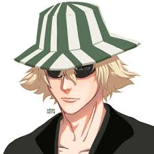

Anime Article
Though usually a laid-back, optimistic, jovial, humble and eccentric man, Urahara shows a deceptively cunning and serious side when the situation warrants it. He commonly uses idle conversation and outward concern to distract his opponents.[5] Despite his care-free attitude, he always speaks politely but carries a sarcastic wit. Yoruichi Shihōin notes he tends to go over the top with whatever he becomes passionate about. He has described himself as a "mere honest, handsome, perverted businessman". Approximately 110 years ago, Urahara's personality was slightly opposite of what it is in the present. During his earlier years as a captain, he was viewed as a nervous, flustered, and quiet person. Somewhat unsure of himself, he lacked confidence in his ability to be a good leader. In addition, he was occasionally confused with how to deal with his division. Despite being uncomfortable in his role, he seemed relatively at ease in his previous position at the 2nd Division Detention Unit. However, he eventually hardened his resolve to take on his role as captain by becoming more serious and determined. Urahara can usually be found near the scene of an important event, but he rarely intervenes in situations, preferring to stay on the sidelines. He often knows more information than he lets on, and despite being a major player in the situation, he acts only as a catalyst, having others do the work for him. Urahara is often manipulative, tricking people into doing what he wants them to. A recurring hobby of his tends to be building large secret underground training spaces. Kisuke is a pragmatic combatant, believing that using any means necessary in a life-and-death battle is essential in victory and survival, such as forming an alliance with Grimmjow Jaegerjaquez beforehand to defeat Askin Nakk Le Vaar via a sneak attack from behind.[6]
Kisuke Urahara
Kisuke is a tall, lean man with light skin and gray eyes. His hair is messy and light-blond (almost pale), with strands framing the sides of the face and hanging between his eyes, and he has chin stubble. He wears a dark green samue. Over this, he wears a black haori, which sports a white diamond pattern along its bottom half, reminiscent of an inverted captain's haori. Urahara carries a fan, which he occasionally uses to hide his face. He usually wears traditional Japanese wooden sandals (geta) and a striped dark green and white bucket hat (which usually shadows his eyes),[2] which has earned him the nickname "sandal-hat" (ゲタ帽子, geta-bōshi; "Mr. Hat-and-Clogs" in the English dub). During his earlier years in Soul Society, he had a clean-shaved face and wore the standard Shinigami shihakushō. In his more casual events, he usually wore his geta.[3] He later wore a long-sleeved captain's haori after his promotion to the rank of captain.[4]